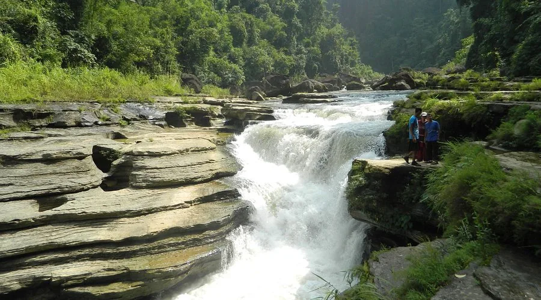
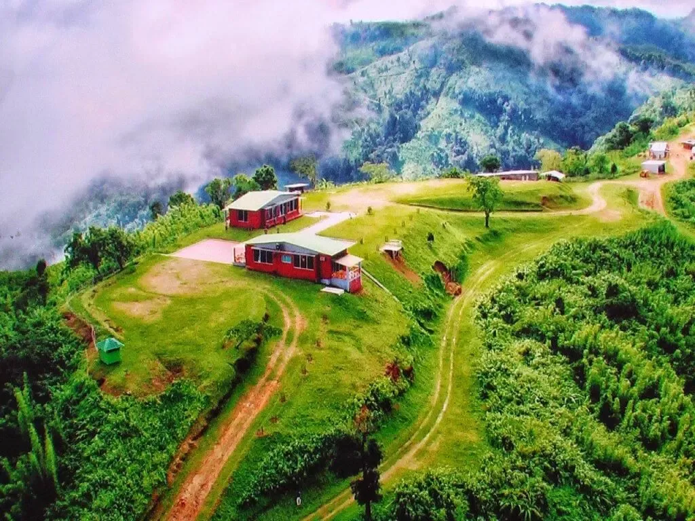

VIEW POINT
丘陵の展望
朝霧や雲が広がる景観を楽しめます。山間部は気温差に注意します。
BANDARBAN / HILL DISTRICT
丘陵、川、滝の風景と、多様な地域文化に触れられる自然豊かな場所です。
ABOUT THE AREA
バンダルバンは、平地とは異なる雄大な景観が魅力です。展望地、川、滝などを巡る際は、天候と道路状況を確認し、無理のない行程を組みます。
地域の文化や生活習慣を尊重し、人物撮影をする場合は必ず許可を取りましょう。
PLACES TO SEE
写真と短い説明で、地域の特徴を紹介します。
朝霧や雲が広がる景観を楽しめます。山間部は気温差に注意します。

静かな川と岩場の景観が魅力。水量や足元の状態を確認してください。

自然の中を歩いて訪れるスポット。雨季は特に安全確認が必要です。

丘陵に広がる集落と自然を眺められます。地域のルールを守って訪問します。
TRAVEL NOTES
安全で気持ちのよい旅にするための基本的な注意点です。
入域条件、道路状況、天候を旅行前に確認します。
歩きやすい靴、雨具、気温差に対応できる服を準備します。
地域住民や少数民族の文化を尊重し、撮影前に確認します。
MAP
外部地図サービスを利用しています。